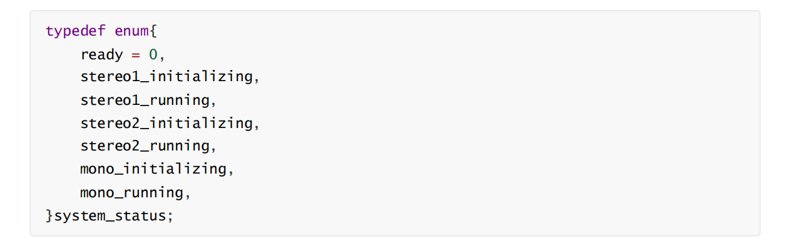

基本功能使用及介绍
设备拿到手当然是要先试一下效果的，这部分可以参考本专栏的第一篇<Viobot开机指南>
接下来我们就从UI开始熟悉这个产品吧！
1.状态
设备上电会自动运行它的程序，开启了一个服务器，上位机通过连接这个服务器连接到设备，连接成功后就如上图所示，状态栏会显示已连接。
此时它的系统的算法状态是停止状态的，这个系统状态有七个状态：
1）停止
2）mono1初始化中
3）mono1运行中
4）stereo1初始化中
5）stereo1运行中
6）stereo2初始化中
7）stereo2运行中
对应着SDK上面的定义：

2.点云
上位机有点云显示类型的选择，分别是stereo、tof和rdf三种
stereo点云是算法的原生输出点云，也就是对应的ROS话题/pr_loop/points
rdf点云对应滤波后的点云，对应的ROS话题/pr_loop/points_rdf ，此功能基础版是没有的！
tof点云只有在TOF版本开启TOF传感器并且stereo2算法启动了TOF建图才会有输出，对应的ROS 话题为/pr_loop/tof_points
还可以设置上位机接收到的点云的显示大小，以及点云显示的范围（主要是Z轴上面的范围），当点云的Z坐标大于最高值或者小于最小值的时候，点云就不会显示在上位机界面。
3.操作面板
1）算法选择
stereo2所在的框可以点击右边的倒三角选择启动的算法。
算法包含了stereo2、stereo1和mono1
mono1是一个单目的测试例程，需要激励才能完成初始化，用于测试。
stereo1是一个双目的测试例程，启动能够直接完成初始化，但是效果一般，已被弃用。
stereo2是我们设备自带的主SLAM算法，会长期维护并更新升级。
2）算法控制
算法控制包含了六个按键

启动：点击即可启动选中的算法，启动后上面的系统状态会更新到相应的状态，启动按钮会变成停 止，点击停止即可停止算法。
重置：重置设备当前位姿，但不清除词袋信息，当设备触发词袋回环时，仍可重定位到之前词袋记 录的位姿。
算法重启：重启整个算法，并清除之前记录并加载在算法的词袋信息，词袋会重新开始记录。 清除轨迹：清除UI当前显示的轨迹和点云。
词袋地图：加载词袋地图时，在UI上面显示关键帧位姿。
添加关键帧 ：手动添加一帧关键帧到词袋里面。
保存BOW ：将本次运行生成的词袋地图保存到指定路径。
3）其他控制
关闭视频 ：关闭UI视频流显示。
关机 ：关闭设备的程序，用于程序升级。
打开：打开设备的文件服务器，用于修改配置，查看保存的文件等。
设备重启：点击按钮后，整个设备系统会直接重启，用于一些配置向修改生效。
TOF ON(OFF) ：TOF手动开关（TOF版可用）
LED ON(OFF) ：补光灯手动开关(补光灯版可用)
坐标 ：设备当前位姿显示。
全局一致：根据运行过程的关键帧重新生成一个完整的点云地图，加入滤波和修正。
保存PCD：将全局一致生成的点云保存PCD。
4.设置页面
点击设置页面，会弹出一个小窗口，对应五个标签栏
1）network
设置对应网络的ip、子网掩码、网关，配置后点确定，设备重启即可生效。
2）viobot

此页面设置需要重启设备才能生效！
左边补光灯和TOF的勾勾上表示设备上电启动时会自动开启补光灯/TOF，如果需要手动开启可以点击UI上面那两个独立按键。
imu频率：默认200Hz，现最高支持400Hz，没有特殊需求一般不建议修改。
image频率：相机帧率，基础版兼顾开销最好的是15fps，PRO版25fps。
自动曝光：前面的勾勾上则开启自动曝光，根据下面设置的常规亮度来调节相机成像亮度，如果不需 要自动曝光，则将勾去掉，单独设置下面的曝光时间。
自动增益：前面的勾勾上则开启自动增益，该功能在场景特别暗的时候好用，但在一般场景下，开启 自动增益可能会影响算法精度。
曝光时间：曝光时间在去掉上面的自动曝光的勾时可设置，如果要用到这个设置，可能需要用户自行 根据不同设置值下的成像表现来设置，属于经验值。调大图片 会变量，调小会变暗，取值 范围：1~65535。
增益等级：自动增益勾去掉时可设置，推荐值1，如果画面太暗，效果不佳可设置为2。
常规亮度：推荐室内：80~95;室外：120~135；根据画面亮度手动调节。
3）stereo2
TOF：勾选则使用TOF建图，如果勾选但是没有开启TOF传感器，stereo2将会一直卡在初始化状态。
Z轴修正：用于修正Z轴偏差，默认关，如果Z轴偏差过大建议勾选。
点云密度：pro版默认设置为16，基础版默认32。
滤波参数：设置过滤点云的孤立点，单位m，建议0.15。
点云最小深度：0.1以内的点深度准确性变低，不建议设置更小的值，往大了设可以屏蔽一些特别近的噪
点，单位（m）
点云最大深度：深度管理的最大半径，室外大场景可以设置为100.默认室内20~35即可。
4）loop

加载词袋地图：在使用历史词袋地图时，勾选会自动加载下面路径下的词袋地图。
保存关键帧图片：勾选则会保存所有关键帧的图片到下面那个路径下，一般不勾选，因为会占用太多磁
盘空间。
添加关键帧：设置添加关键帧的方式：手动/自动；设置为手动，在没有手动添加关键帧时，可以屏蔽掉 回环的影响。
保存词袋地图的路径：设置保存词袋地图的路径。注意：该路径是在设备上的。
5）version
这页记录了这台设备的基本信息，以及程序的版本。